Podręcznik użytkownika
Prawa autorskie
Copyright © 2010-2015. Ten dokument jest chroniony prawem autorskim. Lista autorów znajduje się poniżej. Możesz go rozpowszechniać oraz modyfikować na zasadach określonych w General Public License (http://www.gnu.org/licenses/gpl.html), wersja 3 lub późniejsza, albo określonych w Creative Commons Attribution License (http://creativecommons.org/licenses/by/3.0/), wersja 3.0 lub późniejsza.
Współtwórcy
Jean-Pierre Charras.
Tłumaczenie
Kerusey Karyu <keruseykaryu@o2.pl>, 2014-2016.
Kontakt
Wszelkie zauważone błędy, sugestie lub nowe wersje dotyczące tego dokumentu prosimy kierować do:
-
W sprawie dokumentacji: https://github.com/KiCad/kicad-doc/issues
-
W sprawie oprogramowania: https://bugs.launchpad.net/kicad
-
W sprawie tłumaczeń interfejsu użytkownika (i18n): https://github.com/KiCad/kicad-i18n/issues
Data publikacji i wersja oprogramowania
23 Maj 2015.
1. Wprowadzenie do programu Pl_Editor
Pl_Editor to narzędzie do tworzenia własnych układów stron oraz bloków tytułowych.
Ramkę tytułową, obramowanie strony oraz inną grafikę (np. logotyp) nazywano tutaj układem strony.
Podstawowymi elementami składowymi są:
-
Linie
-
Prostokąty
-
Teksty (z formatowaniem symbolicznym pół, które zostaną zastąpione przez rzeczywistą zawartość, taką jak data czy numer strony) które dostarcza Eeschema lub Pcbnew.
-
Wypełnione wielokąty (głównie przeznaczone do tworzenia kształtów grafiki).
-
Bitmapy.
|
Ostrzeżenie
|
Bitmapy mogą być rysowane tylko przez kilka modeli ploterów (tylko PDF i PS). Dlatego, dla pozostałych ploterów, rysowana będzie tylko krawędź brzegowa takich elementów. |
-
Wszystkie te elementy mogą zostać automatycznie powielane, a teksty i linie łamane mogą również zostać przekształcane przez obrót.
2. Pliki obsługiwane przez Pl_Editor
2.1. Pliki wejściowe i domyślny plik układu strony
Pl_Editor odczytuje lub zapisuje pliki z definicjami układu strony *.kicad_wks (KiCad Worksheet).
W przypadku pierwszego uruchomienia zostanie użyty domyślny układ strony programu KiCad, do czasu załadowania dowolnego pliku układu strony.
2.2. Pliki wyjściowe
Obecnie plik definicji układu strony może zostać zapisany jako *.kicad_wks, z użyciem formatu S-expression, który jest już szeroko używanym formatem zapisu danych w programie KiCad.
Plik ten może być później użyty w programach Eeschema i/lub Pcbnew jako własny układ strony.
3. Działanie programu
3.1. Podstawowe elementy układu strony:
Podstawowymi elementami składowymi są:
-
Linie
-
Prostokąty
-
Teksty (z formatowaniem symbolicznym pół, które zostaną zastąpione przez rzeczywistą zawartość, taką jak data czy numer strony) które dostarcza Eeschema lub Pcbnew.
-
Wypełnione wielokąty (głównie przeznaczone do tworzenia kształtów grafiki) tworzone przez Bitmap2component. Nie było możliwe wbudowanie ich tworzenia w programie Pl_editor, ponieważ skomplikowane kształty byłyby bardzo trudne do ręcznego odwzorowania prostymi narzędziami.
-
Bitmapy przeznaczone do umieszczania logotypów.
|
Ostrzeżenie
|
Bitmapy mogą być rysowane tylko poprzez kilka modeli ploterów: wspierających PDF oraz PS. |
Jednakże:
-
Teksty, wypełnione wielokąty oraz bitmapy są definiowane poprzez ich pozycję i mogą być obracane.
-
Linie (w rzeczywistości segmenty) oraz prostokąty są definiowane przez dwa punkty: początkowy i końcowy. Nie mogą być one obracane (gdyż jest to bezużyteczne w przypadku linii).
Wszystkie elementy można automatycznie powtarzać.
Teksty, które są powtarzane akceptują także wartość kroku z jakim mają się równolegle zmieniać (generalnie gdy teksty to jedna litera lub cyfra).
3.2. Układ współrzędnych
Każda pozycja, czy punkt początkowy czy końcowy, jest zawsze względna wobec narożnika strony.
Ta funkcjonalność pozwala na definiowanie układów strony niezależnie od rozmiaru papieru.
3.3. Punkty bazowe i pozycje elementów
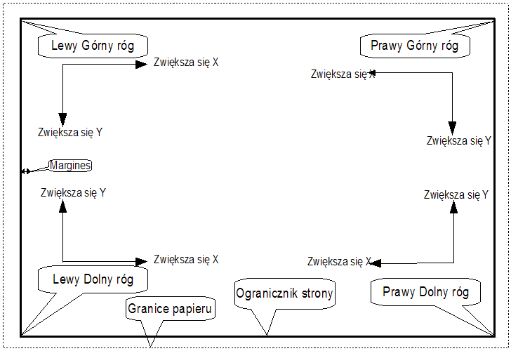
-
Gdy zmienia się rozmiar strony, pozycja elementu określona względem punktu bazowego (jednego z narożników) się nie zmienia.
-
Zwykle tabliczki tytułowe są wyrównane do prawego dolnego narożnika i ten narożnik jest dla nich punktem bazowym, zatem wszelkie elementy składowe ramki są ułożone tak samo niezależnie od rozmiaru strony.
Dla prostokątów i segmentów, które posiadają dwa punkty zaczepienia, każdy punkt ma swój punkt bazowy.
3.4. Rotacja elementów
Elementy których pozycja określana jest przez jeden punkt (teksty lub wypełnione wielokąty) można obracać względem tego punktu:
Normalna: Rotacja = 0

Obrócona: Rotacja = 20 oraz 10 stopni.
3.5. Elementy powtarzalne
Elementy składowe ramek można powtarzać.
Jest to użyteczne do tworzenia siatek oraz ramek podzielonych na pola.
4. Tekst i formatowanie
4.1. Symbole formatowania pól
Teksty mogą być prostymi ciągami lub też zawierać symbole formatowania pól.
Symbole formatowania zostaną zastąpione przez ich wartości pobrane ze zmiennych Eeschema lub Pcbnew.
Formatowanie przypomina składnię formatowania funkcji printf() w języku C.
Symbole formatowania składają się ze znaku % połączonego z literą kodową.
Jedynym odstępstwem jest format %C, który posiada jedną literę i niezbędną mu cyfrę - numer komentarza.
Poszczególne symbole formatowania pól oznaczają:
%% = zamieniany na znak %
%K = wersja programu KiCad
%Z = nazwa formatu papieru (A4, USLetter …)
%Y = pole Firma z ustawień strony
%D = pole Data z ustawień strony
%R = pole Rewizja z ustawień strony
%S = numer arkusza
%N = liczba arkuszy
%Cx = pole Komentarz z ustawień strony (x = 0…9 określa numer komentarza)
%F = nazwa pliku
%P = nazwa ścieżki do pliku (nazwa arkusza w przypadku Eeschema)
%T = pole Tytuł z ustawień strony
Przykładowo:
“Rozmiar: %Z” wyświetli “Rozmiar: A4” lub “Rozmiar: USLetter”
Tryb wyświetlania dla użytkownika:
 aktywna. Ramka tytułowa
jest wyświetlana tak jak w Eeschema i Pcbnew
aktywna. Ramka tytułowa
jest wyświetlana tak jak w Eeschema i Pcbnew
Tryb natywny wyświetlania:
 aktywna. Natywny tekst
wprowadzany w programie Pl_Editor, z jego symbolami formatowania.
aktywna. Natywny tekst
wprowadzany w programie Pl_Editor, z jego symbolami formatowania.
4.2. Teksty złożone z wielu linii
Teksty w układzie strony mogą również zawierać wiele linii.
Istnieją dwie możliwości ich wprowadzania:
-
Można w tekście umieścić znak przejścia do nowej linii zapisany w notacji języka C: \n czyli znak n poprzedzony znakiem ukośnika,
-
Można w prawym panelu przy zaznaczonym obiekcie tekstowym w jego polu Tekst wprowadzić tekst z przejściami do nowej linii.
Poniżej znajduje się przykład tekstu składającego się z wielu linii.
Ustawienia
Pliki wyjściowe

4.3. Teksty złożone z wielu linii w ustawieniach strony
W ustawieniach strony, pola do wpisywania tekstu nie pozwalają na swobodną edycję tekstu i prowadzanie kilku linijek tekstu nie jest akceptowane.
Sekwencja dwóch znaków “\n” powinna zostać wstawiona by wymusić przejście do nowej linii w tekście.
Poniżej znajduje się przykład tekstu w polu Komentarz 2, który zostanie wyświetlony w dwóch liniach:

Tak wprowadzony tekst zostanie wyświetlony:

Jeśli w treści tekstu zajdzie potrzeba umieszczenia takiego tekstu, że występują w nim po sobie dwa znaki \n, ale nie będą one oznaczały znaku przejścia do nowej linii należy zamiast \n wprowadzić \\n:
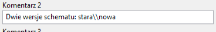
Wtedy taki tekst zostanie wyświetlony w jednej linii, a znak przejścia do nowej linii nie zostanie błędnie zinterpretowany:
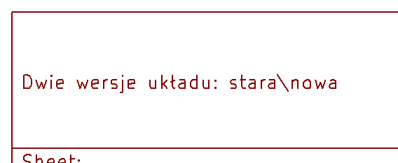
5. Teksty w ograniczonym polu
5.1. Elementy widoczne na poszczególnych stronach
Używając Eeschema, pełny schemat często nie mieści się na jednej stronie i jest podzielony hierarchicznie na klika arkuszy.
W takim przypadku wszystkie elementy układu strony są wyświetlane na kolejnych arkuszach.
Jednak użytkownik może dodatkowo zdefiniować by pewne elementy ukazywały się tylko na pierwszej stronie lub tylko na kolejnych stronach. W tym celu przewidziano możliwość wyboru Opcji wyświetlania:

Opcja pierwszej strony:
-
Brak: nie ma ograniczeń.
-
Tylko na pierwszej stronie: element pojawi się tylko na pierwszej stronie.
-
Nie umieszczaj na pierwszej stronie: element pojawi się tylko na dalszych stronach.
5.2. Teksty w ograniczonym polu
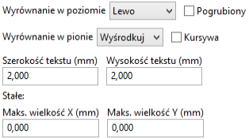
Teksty mogą posiadać ograniczenia co do zajmowanego miejsca. Dlatego jako jedyne mają dodatkowe 2 parametry:
-
Maksymalna wielkość X,
-
Maksymalna wielkość Y,
które będą określać ramy w jakich mogą się one zmieścić.
Kiedy opcje te nie będą ustawione na zero, wtedy podczas wyświetlania tekstu, bieżąca wielkość lub szerokość zostanie automatycznie i dynamicznie ograniczona, tak by cały tekst zmieścił się w określonych ramach.
Oczywiście jeśli tekst będzie mniejszy niż określone ramy nie będzie on skalowany.
Tekst bez ramki ograniczającej. Maksymalny rozmiar X = 0,0 Maksymalny rozmiar Y = 0,0

Ten sam tekst ale ograniczony ramką: Maksymalny rozmiar X = 40,0 Maksymalny rozmiar Y = 0,0

Ograniczenie pola dla tekstu można też zastosować do tekstów składających się z wielu linii:
Ustawienia
Pliki wyjściowe

6. Uruchamianie
Pl_Editor zwykle uruchamiany jest przez Menedżera projektu KiCad albo poprzez linię poleceń.
W przypadku linii poleceń składnia jest standardowa: pl_editor <plik *.kicad_wks>.
7. Obsługa programu
7.1. Ekran główny
Poniższy obrazek ukazuje pełne okno programu Pl_Editor:

Lewy panel gdzie znajduje się lista elementów składowych układu strony. Zamiast wybierać element za pomocą myszy, klikając w obszarze roboczym, można go wybrać z tej listy. W przypadku elementów niewidocznych może to być jedyny sposób ich wyboru.
Prawy panel gdzie znajdują się właściwości danego elementu, które można dostosować lub zmienić.
7.2. Menu główne
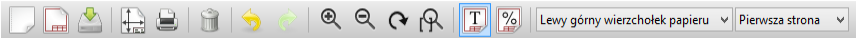
Znaczenie poszczególnych przycisków jest następujące:
|
Tworzy nowy plik z definicją układu strony. |
|
Otwiera istniejący plik z układem strony. |
|
Zapisuje bieżący układ strony w pliku .kicad_wks. |
|
Pokazuje okno wyboru układu strony i edytor ramki tytułowej. |
|
Drukuje bieżącą stronę. |
|
Usuwa obecnie wybrany element. |
|
Narzędzia do cofania i przywracania edycji. |
|
Polecenia do dopasowywania widoku. |
|
Pokazuje układ strony w trybie użytkownika: teksty są pokazywane jak w Eeschema lub Pcbnew: Formatowanie tekstu jest zamieniane przez właściwy tekst. |
|
Pokazuje układ strony w trybie natywnym: teksty są pokazywane tak jak zostały wprowadzone, z kodami formatowania bez podmiany zawartości. |
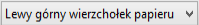 |
Wybór bazowego narożnika, dla koordynatów pokazywanych na pasku statusu. |
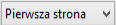 |
Wybór pokazywanej strony (strona pierwsza czy kolejne). Pozwala wybrać czy układ strony będzie widoczny tak jak na pierwszej stronie, czy tak jak na kolejnych stronach (na przykład na schemacie, który zawiera więcej niż jedną stronę) |
7.3. Polecenia w oknie edycji
7.3.1. Polecenia wydawane z klawiatury
F1 |
Przybliżanie widoku. |
F2 |
Oddalanie widoki. |
F3 |
Odświeżenie widoku. |
F4 |
Przesunięcie kursora na środek obszaru roboczego razem z przesunięciem widoku. |
Home |
Dopasowanie powiększenia widoku by pełny układ strony zmieścił się w obszarze roboczym. |
Space Bar |
Ustawienie punktu bazowego dla współrzędnych względnych wyświetlanych na pasku statusu. |
Strzałka w prawo |
Przesunięcie kursora o jedną pozycję siatki w prawo. |
Strzałka w lewo |
Przesunięcie kursora o jedną pozycję siatki w lewon. |
Strzałka w górę |
Przesunięcie kursora o jedną pozycję siatki w górę. |
Strzałka w dół |
Przesunięcie kursora o jedną pozycję siatki w dół. |
7.3.2. Polecenia związane z myszą
Kółko myszy |
Przybliżanie lub oddalanie widoku w danym punkcie. |
Ctrl + Kółko myszy |
Przesuwanie widoku w prawo lub lewo z zachowaniem pozycji kursora. |
Shift + Kółko myszy |
Przesuwanie widoku w górę lub w dół z zachowaniem pozycji kursora. |
Kliknięcie lewym klawiszem myszy |
Wybór elementu na ekranie. |
Kliknięcie prawym klawiszem myszy |
Otwarcie menu kontekstowego dla elementu, nad którym znajduje się kursor. |
7.3.3. Menu kontekstowe
Menu kontekstowe jest zmienne w zależności od miejsca gdzie aktualnie znajduje się kursor. Domyślnie zawiera podstawowe polecenia. Po wybraniu jednego z elementów dostępne są dodatkowe polecenia.
-
Dodaj linię
-
Dodaj prostokąt
-
Dodaj tekst
-
Importuj plik z definicją linii łamanej
służą do umieszczania na obszarze roboczym elementów składowych układu strony.
-
Wybór powiększenia: bezpośredni wybór stopnia powiększenia.
-
Wybór siatki: bezpośredni wybór skoku siatki.
|
Zapamiętaj
|
Importuj plik z definicją linii łamanej jest przeznaczony do umieszczenia na układzie strony złożonych linii łamanych np. logotypów. Nie jest możliwe dodanie klasycznej linii łamanej, gdyż wymaga ona zwykle kilku lub kilkunastu punktów, co nie jest obecnie obsługiwane. Linie takie w postacie wypełnionych obszarów można zaimportować z plików tworzonych przez Bitmap2Component. |
7.4. Pasek stanu
Pasek stanu jest umiejscowiony na dole okna aplikacji i dostarcza ważnych informacji dla użytkownika.
Należy pamiętać, że współrzędne są zawsze podawane jako względne w stosunku do wybranego punktu bazowego.
8. Panel lewy
Panel lewy pokazuje pełną listę elementów składających się na układ strony.
Kliknięcie prawym klawiszem na liście wybiera wskazany element i jego właściwości pojawiają się automatycznie w prawym panelu. Dodatkowo kliknięcie prawym klawiszem otworzy skrócone menu kontekstowe.
Pozwala ono na proste operacje jak dodanie nowego elementu, czy też jego usunięcie.
-
→ Wybrany element został automatycznie podświetlony w oknie edycji.**
Drzewo projektu: Element item 19 został wybrany, i podświetlony na panelu z rysunkiem.
9. Panel prawy
Prawe okno jest oknem edycji.
|
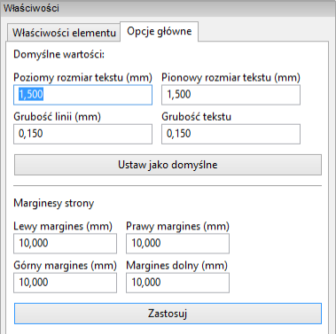 |

W tym oknie dialogowym można ustawić właściwości strony oraz właściwości elementu aktualnie wybranego.
Wyświetla właściwości danego elementu w zależności od jego typu:
Ustawienia dla linii oraz prostokątów |
Ustawienia dla tekstów |
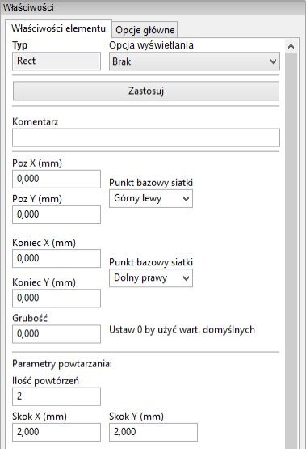 |
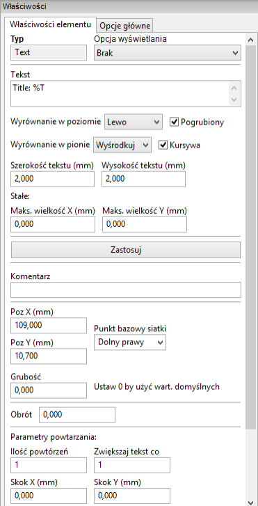 |
Ustawienia dla złożonych linii łamanych |
Ustawienia dla bitmap |
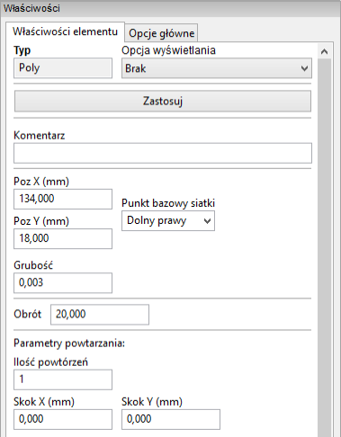 |
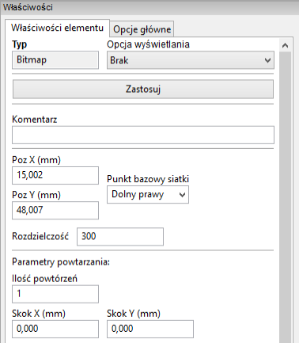 |
10. Edycja istniejących elementów
10.1. Wybór elementu
Edytowany element może zostać wybrany poprzez:
-
Drzewo projektu,
-
Klikając na niego z wykorzystaniem lewego klawisza myszy w obszarze roboczym,
-
Klikając na niego z wykorzystaniem prawego klawisza myszy w obszarze roboczym. Zostanie dodatkowo wyświetlone menu kontekstowe.
Gdy element zostanie wybrany, to zmieni się jego kolor wyświetlany w obszarze roboczym.
|
Punkt początkowy będzie symbolizował kwadrat (
|


Kliknięcie prawym klawiszem będzie wywoływać odpowiednie menu kontekstowe:
Menu to będzie się zmieniać w zależności od wybranego elementu:
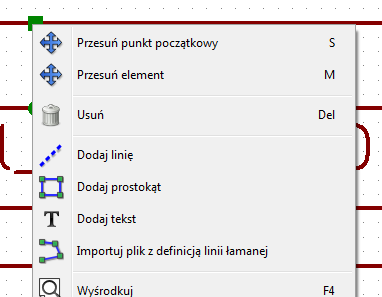 |
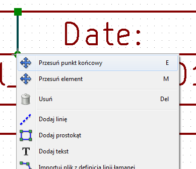 |
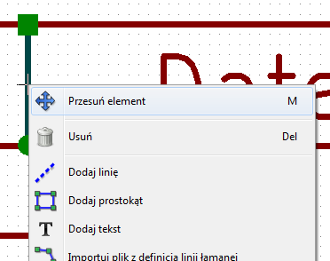 |
Jeśli z miejscu kliknięcia będzie więcej niż jeden element to Pl_Editor wyświetli dodatkowe okno pozwalające wybrać właściwy element:
|
Po wybraniu elementu kub jednego z jego końców, można go przesuwać zgodnie z ruchem kursora myszy oraz upuścić (klikając prawym klawiszem). |

10.2. Tworzenie nowych elementów
Aby dodać nowy element należy skorzystać z menu kontekstowego. Można go wywołać zarówno gdy kursor znajduje się na lewym panelu z drzewem projektu, jak i w obszarze roboczym.
Przy czym oba wywołania będą się różnić, ale podstawowe polecenia związane z tworzeniem nowych elementów zostaną takie same:
Menu podręczne wywołane na lewym panelu

Menu podręczne wywołane w obszarze roboczym.

Linie, prostokąty czy tekst są dodawane bezpośrednio poprzez wybranie odpowiedniego polecenia z menu kontekstowego.
Grafika, np. logotyp należy wcześniej przetworzyć w programie Bitmap2component na postać krzywych i wypełnień.
Opcja "Dołącz plik definicji strony" dołącza właśnie takie pliki, by wstawiać loga (z definicją linii łamanej).
10.3. Tworzenie linii, prostokątów i tekstów
Kliknięcie na jedno z poleceń wstawiania linii, prostokątów lub tekstów otworzy okno dialogowe z jego opcjami:
Dodawanie linii lub prostokąta
Dodawanie tekstu
Z pomocą tych okien można wstępnie określić pozycję punktów początkowych, końcowych bądź narożników.
Jednakże można to zrobić później korzystając z właściwości obiektów znajdujących się na prawym panelu, albo skorzystać z możliwości ich edycji w polu roboczym.
W większości przypadków punkty początkowe odnoszą się do tego samego punktu bazowego siatki.
Jeśli w danym przypadku tak nie jest, określenie punktu bazowego lepiej jest wykonać już na etapie tworzenia, ponieważ jeśli punkt bazowy zostanie później zmieniony, geometria elementu będzie nieco dziwna.
Gdy element zostanie już stworzony, będzie go można dokładniej przesunąć w obszarze roboczym by umieścić go na właściwym miejscu (jest to bardzo użyteczne w przypadku tekstów oraz małych linii lub prostokątów).
10.4. Tworzenie grafiki (logotypów)
By dodać logotyp - linię łamaną (czyli wektorową postać logotypu) należy go najpierw stworzyć używając Bitmap2component.
Program ten tworzy też pliki z definicjami linii łamanych, które można dołączyć do bieżącego projektu wywołując polecenie Importuj plik z definicją linii łamanej.
Plik utworzony przez Bitmap2component to zwykły plik układu strony, ale zawierający wyłącznie jeden element: wypełniona, zamknięta linia łamana.
Należy zauważyć, że polecenie to może zostać użyte również w celu dołączenia innego pliku definicji układu strony do bieżącego projektu.
Po wstawieniu grafiki, można ją przesunąć w docelowe miejsce i zmienić jej parametry, np. obrócić czy powielić tak jak inne elementy układu strony.
10.5. Dodawanie obrazów z map bitowych
Można dodawać obrazy bitowe w większości popularnych formatów (PNG, JPEG, BMP…).
-
Podczas importowania bitmapy jej PPI (pixel per inch) jest ustawiana na 300PPI.
-
Wartość tą można zmienić na prawym panelu w opcji Rozdzielczość (prawy panel).
-
Rozmiar bitmapy na rysunku jest zależny od tego parametru.
-
Należy być ostrożnym przy umieszczaniu map bitowych o dużej rozdzielczości, ponieważ zwiększają one znacznie rozmiar pliku. Ponadto zwiększają one czas potrzebny na przerysowanie ramki.
Bitmapy mogą być powtarzane, lecz nie można ich obracać.